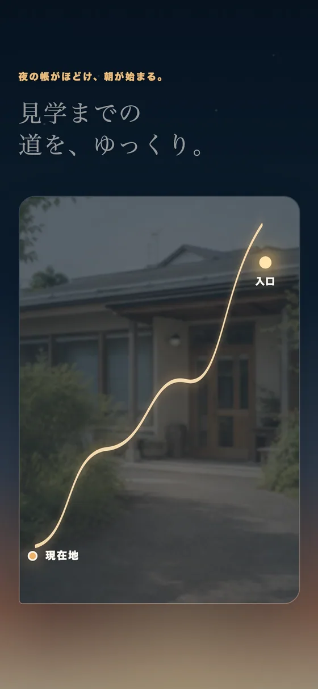

Work 03
ポラーノワークス
見学だけでも、大丈夫です。

課題
読む人は、たいてい不安を抱えている
このサイトを開くのは、本人か、その家族か、支援者です。多くの場合、まだ利用を決めていません。決めていない人に決定を迫るページは、そのまま閉じられます。
設計
目的を「利用開始」から下ろす
サイトの目的を「見学前の不安をほどくこと」に置き直しました。FAQ、見学の流れ、写真で見る道順、と段階的に進み、最後に相談フォームが来ます。フォームの必須項目は「お名前」と「連絡先」の2つだけ。自由記入欄は任意だと明記し、メール希望の人には電話しないことを画面上で約束しています。
学んだこと
必須項目を1つ減らすのが、いちばん効いた
配慮を文章で説明するより、入力欄を1つ消すほうが速く伝わります。やさしさは、言葉より先にフォームの仕様に出ると思いました。

スマートフォンでは、道順の写真とフォームを縦一列にして、迷わず最後まで進めるようにしました。